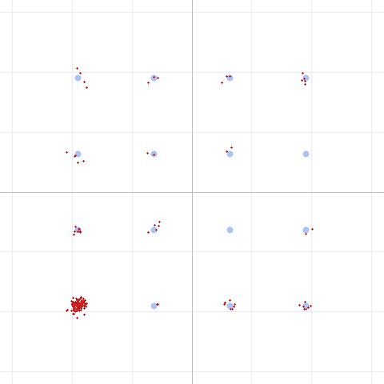

A clue in the corner
While staring at 16QAM constellations, we noticed something odd: one corner point
was used far more than the other fifteen. Here it is on a short message — the
lower-left 0000 point is a dense cloud, the rest are nearly empty:

That lopsidedness is not a channel effect. It's zero-padding. DART's LDPC code
works on fixed-size blocks (e.g., 540 information bits for the fastest 16QAM mode).
A short message — a two-byte "Hi", an ACK, a beacon — fills only a small fraction
of that block; the encoder zero-fills the rest. Because the code is systematic
(the information bits appear verbatim in the transmitted codeword), those padding
zeros map straight onto the 0000 constellation point, over and over.
The natural first reaction is: should we scramble the bits so all symbols are used equally? It's a reasonable instinct — but it's the wrong lever, and chasing why led us to a much better one.
Why "scramble for uniform symbols" doesn't help
For a linear channel (noise, phase, fading), an error-correcting decoder's
performance depends only on the code and the per-bit SNR — not on which
constellation points you happen to land on. Sending the 0000 corner a thousand
times gives every bit the same distances, the same noise, the same reliability as
sending random symbols. Making the symbol histogram uniform is cosmetically nicer
and slightly better for spectral flatness, but it delivers zero coding gain.
It will not lower the SNR you need to decode.
So equalizing the symbols is a dead end. But the observation was still pointing at something real: those padding bits are wasted effort. The transmitter spends airtime sending them, and the receiver spends decoding effort trying to figure out bits whose value we already know is zero.
The right lever: code shortening
Code shortening is the classic technique for exactly this situation. Instead of asking the decoder to recover the padding bits, we simply tell it: "these bits are known to be zero." In a belief-propagation LDPC decoder that means pinning those bits' log-likelihood ratios to a large, confident value before decoding.
Known bits are not passengers — they're constraints. Every known bit tightens the web of parity checks around the unknown bits, so the decoder recovers the real payload from far noisier input. In effect, the code rate collapses: a two-byte payload in a 648-bit codeword is only ~7% real data, so it's protected as if by a rate-0.07 code instead of the nominal 5/6.
The change is tiny — a few lines in the decoder that mark the padding region as known. Nothing about the transmitted signal changes; it's purely a smarter receiver. And as a bonus, it also strengthens the frame header, which is a 144-bit field inside a 324-bit block — 180 known padding bits that now help every single frame decode.
What we measured
We A/B-tested a 2-byte message at the most aggressive mode (16QAM, rate 5/6) through the SBC codec, sweeping the channel down to the decode cliff:
| Decode holds down to | What finally breaks | |
|---|---|---|
| Without shortening | ~+3 dB channel SNR | the LDPC code gives up |
| With shortening | −2 dB channel SNR | the preamble detector, not the code |
That's a > 5 dB improvement on a short frame — and notice the failure mode changed: with shortening the decoder is no longer the bottleneck at all. The frame stops decoding only because, at those noise levels, the receiver can't find the preamble anymore. The error correction has more margin than the rest of the link.
Crucially, this is free and self-scaling:
- The gain is proportional to how much of the block is padding, so it's largest for the shortest frames — ACKs, control messages, beacons, keystrokes — which is exactly the traffic that most needs to punch through a weak link.
- For large payloads there's little padding, so the effect fades to nothing — no downside.
- It costs no bandwidth, no airtime, and no transmit changes. Existing signals decode better on a receiver that knows to do it.
- No regression across the full automated test suite.
Which modes actually benefit?
A natural follow-up: does this help the robust modes (BPSK, QPSK) too, or only the aggressive ones? We measured it — a 2-byte frame at the decode cliff, with and without shortening:
| Mode | Without shortening | With shortening |
|---|---|---|
| QPSK rate-1/2 | fails at −4 dB (preamble detection) | fails at −4 dB (preamble detection) |
| 16QAM rate-5/6 | fails at +3 dB (the code) | ~−3 dB (preamble detection) |
This is a clean illustration of what shortening does and doesn't touch. Shortening only helps when the error-correcting code is the bottleneck. For the robust rate-1/2 modes, the code is already stronger than the preamble detector: a short frame decodes down to about −3 dB whether or not we shorten, because below that the receiver can no longer find the preamble at all. The shortening still runs — it just has nothing left to save, because detection gives out first.
For the aggressive modes it's the opposite. The code fails first (16QAM rate-5/6 gives up at +3 dB, far above the detection floor), so shortening's extra margin slides the decode cliff all the way down to the detection limit — the full 5+ dB.
The takeaways:
- Shortening helps exactly where the code is working hardest — the high-rate modes and the shortest frames. It's invisible on the robust modes not because it fails, but because they were never code-limited to begin with.
- It never hurts and costs nothing, so it simply stays on.
- It also exposes a different lever for the future: the robust modes are now detection-limited, so extending their short-frame range would mean improving the preamble/sync, not the code.
The takeaway
The constellation clump wasn't a problem to hide (by scrambling) — it was a signpost saying "you're transmitting and decoding bits you already know." The useful response wasn't to make the known bits look random; it was to exploit that we know them. Code shortening turns wasted padding into free error-correction margin, and it helps most precisely where a marginal link hurts most: the short control frames that keep a link alive.
There's even a further step we haven't taken yet — puncturing the known padding, i.e., not transmitting it at all, to save airtime on short frames. That's a story for another day.
Reproduce this
The behavior is in the standard decode path — short frames simply decode at lower SNR now. To see the padding clump that started it all:
dart run test/dart_modem_test.dart pipeline -m 4 --sbc --noise 20 \
--png clump.png "Hi"
...and watch a tiny payload survive absurd noise levels that a full-rate codeword never could.
Method: DART software pipeline (encode → SBC codec → AWGN → decode), 16QAM, 2-byte payload, controlled A/B on the LDPC shortening step. Fifth in a series; companions cover the real-world findings, SBC bitpool, SBC bit allocation, and phase noise & pilots.